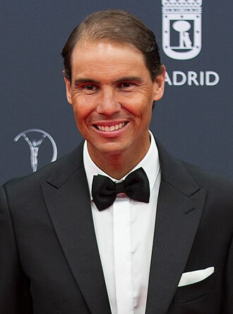

| Medallistas Olimpico | |
|  | |
| Apodo: | «Rafa» «La Fiera» «El Rey de la Tierra» «El Matador» «El Gladiador» |
| Pais: | España |
| Residencia: | Manacor, Mallorca |
| Altura: | 1,85 |
| Peso: | 85kg |
| Entrenadores: | Toni Nadal, Carlos Moya, Marc Lopez, Gustavo Maracaccio |
| Profesional desde: | 2001 |
| Retiro: | 2024 |
| Brazo habil | Zurdo, reves a dos manos |
| Dinero Ganado | 134 946 100 dólares estadounidenses |
| Perfil oficial Atp | Perfil ATP |
Individuales |
|
|---|---|
| Récord de su carrera | 1080-228 |
| Títulos de su carrera | 92 ATP |
| Mejor ranking | 1.º (18 de agosto de 2008) |
Resultados Grand Slam |
| Abierto de Australia | 2009, 2022 |
| Roland Garros | 2005, 2006 2007 2008 2010 2011 2012 2013 2014 2017 2018 2019 2020 2022 |
| Wimbledon | 2008 2010 |
| Abierto De EE.UU. | 2010 2013 2017 2019 | Otros torneos |
| Juegos Olimpicos | Oro 2018 | DOBLES |
| Record de su carrera | 142-77 |
| Titulos de su carrera | 11 ATP |
| mejor ranking | 26º (8 de agosto de 2005) |
Resultados de Grand Slam |
| Abierto de Australia | 3R (2004,2005) |
| Wimblendon | 2R 2005 |
| Abierto de U.S.A. | 2004 | Otros torneos |
| Juegos Olimpicos | Oro 2016 |
Competiciones por equipos |
| Copa Davis | G 2004 2008 2009 2011 2019 |
| Copa ATP | F 2020 |
| Copa Laver | G 2017 2019 |